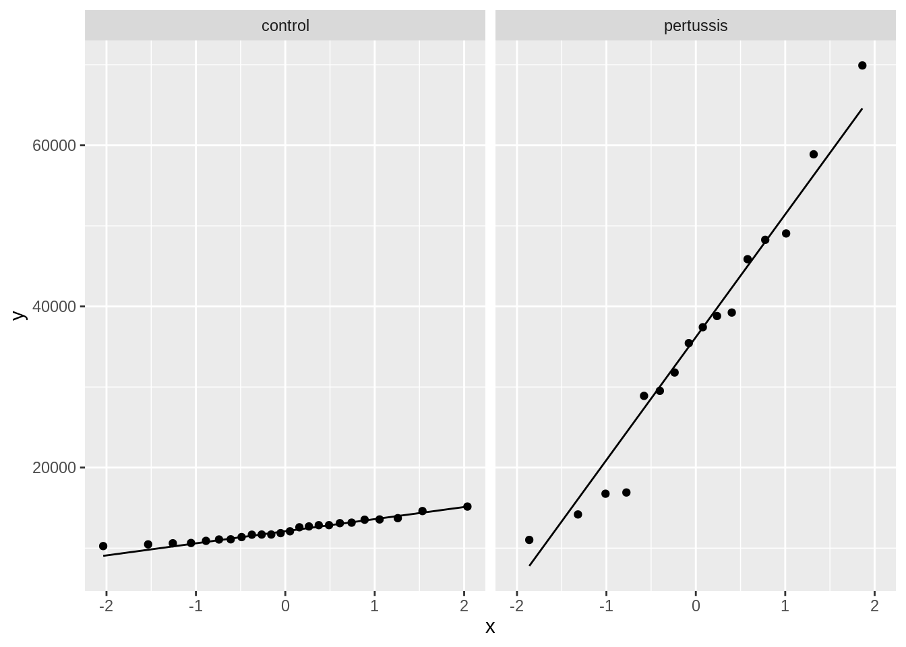
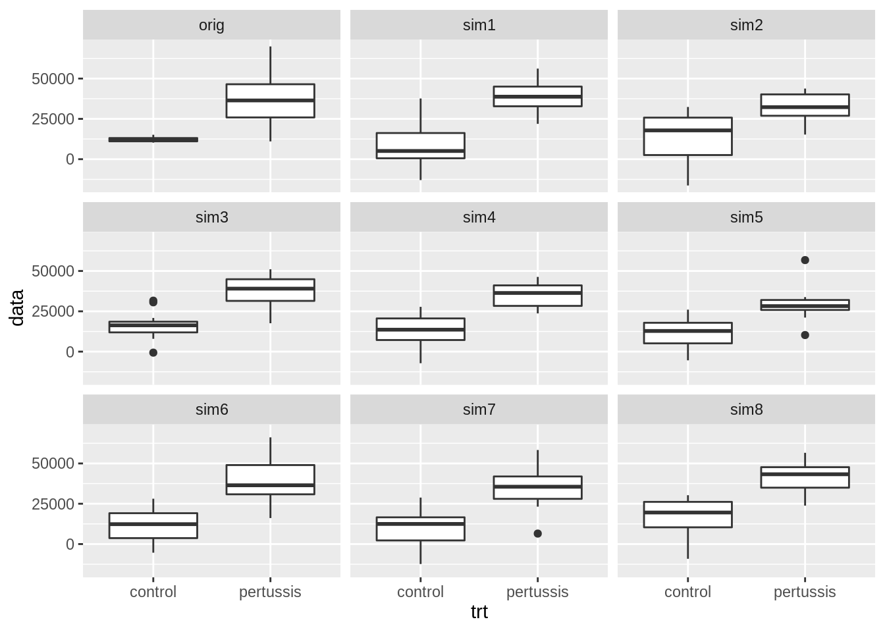

Aim of this tutorial
Upon this exercise you can
- conduct a statistical hypothesis test for a two group comparison in R and to interpret the results.
- critically evaluate the assumptions for a two sample t-test
- use simulations to assist you when evaluating the assumptions of a two group comparison
- select the correct test based on the data exploration.
Background
Researchers wanted to study the immune response on pertussis. They have set up an experiments with 40 rats. 16 rats were infected with pertussis and 24 rats received a control treatment. Researchers measured the white blood cell concentration (WBC) in each rat (count per mm\(^3\).
De data consists of two variables:
Import the dataset
Load the libraries
Data path:
https://raw.githubusercontent.com/statOmics/PSLS21/data/wbcon.csv
wbcon <- read_csv("https://raw.githubusercontent.com/statOmics/PSLS21/data/wbcon.csv")
## Rows: 40 Columns: 2
## ── Column specification ────────────────────────────────────────────────────────
## Delimiter: ","
## chr (1): trt
## dbl (1): WBC
##
## ℹ Use `spec()` to retrieve the full column specification for this data.
## ℹ Specify the column types or set `show_col_types = FALSE` to quiet this message.
Aim of the study
The overarching goal of this study was to assess if the white blood cell count changes upon pertussis infection. To this end, researchers randomized 40 rats to two treatments: A control treatment and a treatment in which the rat was infected with pertussis.
Data exploration
A crucial first step in a data analysis is to visualize and to explore the raw data.
This will allow us to gain insight in the data.
A secondary goal of the data exploration is to check the assumptions of the test that we will perform.
What are the assumptions of this test?
- The data are independent
- The data in both groups have the same variance
- The data in both groups are normally distributed.
Boxplots
We can assess the second assumption using boxplots.
wbcon %>% ggplot(aes(x = trt, y = WBC, fill = trt)) +
geom_boxplot(outlier.shape = NA) +
geom_point(position = "jitter") +
ylab("WBC (count/mm3)") +
xlab("treatment") +
stat_summary(
fun = mean, geom = "point",
shape = 5, size = 3, color = "black"
)
What do you observe?
Both the mean and variance of the data seems to differ between control rats and rats infected with pertussis. So the second assumption is not valid. If the data are normally distributed we can compare the groups using a Welch modified t-test, which is valid if the data in both groups are exhibiting a different variance.
QQ-plots
To assess the assumption that the data are normally distributed in each treatment group, we will use QQ plots.
wbcon %>%
ggplot(aes(sample = WBC)) +
geom_qq() +
geom_qq_line() +
facet_grid(cols = vars(trt))

What do you observe?
The white blood cell counts appear to be normally distributed in both treatment groups.
Assess the research question with the appropriate t-test
Analysis
output <- t.test(WBC~ trt, data = wbcon, var.equal = FALSE)
output
##
## Welch Two Sample t-test
##
## data: WBC by trt
## t = -5.7114, df = 15.132, p-value = 3.984e-05
## alternative hypothesis: true difference in means between group control and group pertussis is not equal to 0
## 95 percent confidence interval:
## -32311.32 -14758.47
## sample estimates:
## mean in group control mean in group pertussis
## 12215.92 35750.81
Conclusion
The average white blood cell count is extremely different between rats that are infected with pertussis and rads that received a control treatment (p << 0.001).
The white blood cell count is on average 2.3535^{4} blood cells/mm\(^3\) higher for rats with pertussis than for rats that received a control treatment (95% CI [1.4758468^{4}, 3.2311324^{4}]).
ADDENDUM: Train yourself in checking the assumptions
In order for the learners to get more proficient in evaluating the assumptions we will simulate 9 dataset with sample sizes similar to our data for which the assumptions of normality and equal variance do hold. For the QQ-plots we will only plot the one from one of the groups.
Simulate data
We simulate 8 datasets with the same sample sizes, means and pooled variance as in the sample.
set.seed(21532)
nSim <- 8
## descriptive statistics
wbcSum <- wbcon %>%
group_by(trt) %>%
summarize(
mean = mean(WBC, na.rm = TRUE),
sd = sd(WBC, na.rm = TRUE),
n = n()
) %>%
mutate(se = sd / sqrt(n))
sigma <- sqrt(sum(wbcSum$sd^2 * (wbcSum$n - 1)) / (sum(wbcSum$n) - 2))
normSim <- matrix(
c(
wbcon$WBC,
rnorm(sum(wbcSum$n) * nSim,
mean = c(
rep(wbcSum$mean[1], wbcSum$n[1]),
rep(wbcSum$mean[2], wbcSum$n[2])
),
sd = sigma)
),
nrow = sum(wbcSum$n)) %>%
as.data.frame() %>%
mutate(trt = wbcon$trt)
Comparisons of variances
names(normSim)[1:(nSim+1)] <- c("orig",paste0("sim",1:nSim))
normSim %>%
gather(samp, data, -trt) %>%
ggplot(aes(x = trt, y = data)) +
geom_boxplot() +
facet_wrap(~samp)

We observe that the difference in variability of the original observations (top left plot) is larger than in the each simulations. Indicating that there is indeed evidence that the variances in each group differ.
Evaluation of normality
Control group
normSim %>%
gather(samp, data, -trt) %>%
filter(trt == "control") %>%
ggplot(aes(sample = data)) +
geom_qq() +
geom_qq_line() +
facet_wrap(~samp)
Pertussis group
normSim %>%
gather(samp, data, -trt) %>%
filter(trt == "pertussis") %>%
ggplot(aes(sample = data)) +
geom_qq() +
geom_qq_line() +
facet_wrap(~samp)
The data in each group does not show larger deviations from normality than what we observe in each of the eight datasets that were simulated under the model assumptions.
LS0tCnRpdGxlOiAiRXhlcmNpc2UgNS4yOiBIeXBvdGhlc2lzIHRlc3Rpbmcgb24gdGhlIHBlcnR1c3NpcyBleGFtcGxlIC0gc29sdXRpb24iCmF1dGhvcjogIkxpZXZlbiBDbGVtZW50LCBhbmQgTWlsYW4gTWFsZmFpdCIKZGF0ZTogInN0YXRPbWljcywgR2hlbnQgVW5pdmVyc2l0eSAoaHR0cHM6Ly9zdGF0b21pY3MuZ2l0aHViLmlvKSIKLS0tCgojIEFpbSBvZiB0aGlzIHR1dG9yaWFsCgpVcG9uIHRoaXMgZXhlcmNpc2UgeW91IGNhbiAKCjEuIGNvbmR1Y3QgYSBzdGF0aXN0aWNhbCBoeXBvdGhlc2lzIHRlc3QgZm9yIGEgdHdvIGdyb3VwIGNvbXBhcmlzb24gaW4gUiBhbmQgdG8gaW50ZXJwcmV0IHRoZSByZXN1bHRzLiAKMi4gY3JpdGljYWxseSBldmFsdWF0ZSB0aGUgYXNzdW1wdGlvbnMgZm9yIGEgdHdvIHNhbXBsZSB0LXRlc3QKMy4gdXNlIHNpbXVsYXRpb25zIHRvIGFzc2lzdCB5b3Ugd2hlbiBldmFsdWF0aW5nIHRoZSBhc3N1bXB0aW9ucyBvZiBhIHR3byBncm91cCBjb21wYXJpc29uCjQuIHNlbGVjdCB0aGUgY29ycmVjdCB0ZXN0IGJhc2VkIG9uIHRoZSBkYXRhIGV4cGxvcmF0aW9uLgoKIyBCYWNrZ3JvdW5kIAoKUmVzZWFyY2hlcnMgd2FudGVkIHRvIHN0dWR5IHRoZSBpbW11bmUgcmVzcG9uc2Ugb24gcGVydHVzc2lzLiAKVGhleSBoYXZlIHNldCB1cCBhbiBleHBlcmltZW50cyB3aXRoIDQwIHJhdHMuIAoxNiByYXRzIHdlcmUgaW5mZWN0ZWQgd2l0aCBwZXJ0dXNzaXMgYW5kIDI0IHJhdHMgcmVjZWl2ZWQgYSBjb250cm9sIHRyZWF0bWVudC4gClJlc2VhcmNoZXJzIG1lYXN1cmVkIHRoZSB3aGl0ZSBibG9vZCBjZWxsIGNvbmNlbnRyYXRpb24gKFdCQykgaW4gZWFjaCByYXQgKGNvdW50IHBlciBtbSReMyQuIAoKRGUgZGF0YSBjb25zaXN0cyBvZiB0d28gdmFyaWFibGVzOgoKLSBXQkM6IHdoaXRlIGJsb29kIGNlbGwgY291bnQgKGNvdW50cy9tbSReMyQpLiAKLSB0cnQ6IHRyZWF0bWVudAoKICAgIC0gY29udHJvbDogcmF0IHJlY2lldmVkIGNvbnRyb2wgdHJlYXRtZW50CiAgICAtIHBlcnR1c3NpczogcmF0IHdhcyBpbmZlY3RlZCB3aXRoIHBlcnR1c3NpcwoKCiMgSW1wb3J0IHRoZSBkYXRhc2V0CgpMb2FkIHRoZSBsaWJyYXJpZXMKCmBgYHtyLCBtZXNzYWdlPUZBTFNFLCB3YXJuaW5nPUZBTFNFfQpsaWJyYXJ5KHRpZHl2ZXJzZSkKYGBgCgpEYXRhIHBhdGg6CgogIGBodHRwczovL3Jhdy5naXRodWJ1c2VyY29udGVudC5jb20vc3RhdE9taWNzL1BTTFMyMS9kYXRhL3diY29uLmNzdmAKCgpgYGB7cn0Kd2Jjb24gPC0gcmVhZF9jc3YoImh0dHBzOi8vcmF3LmdpdGh1YnVzZXJjb250ZW50LmNvbS9zdGF0T21pY3MvUFNMUzIxL2RhdGEvd2Jjb24uY3N2IikKYGBgCgpgYGB7ciwgZXZhbD1GQUxTRX0KZ2xpbXBzZSh3YmNvbikKYGBgCgojIyBBaW0gb2YgdGhlIHN0dWR5CgpUaGUgb3ZlcmFyY2hpbmcgZ29hbCBvZiB0aGlzIHN0dWR5IHdhcyB0byBhc3Nlc3MgaWYgdGhlIHdoaXRlIGJsb29kIGNlbGwgY291bnQgY2hhbmdlcyB1cG9uIHBlcnR1c3NpcyBpbmZlY3Rpb24uIFRvIHRoaXMgZW5kLCByZXNlYXJjaGVycyByYW5kb21pemVkIDQwIHJhdHMKdG8gdHdvIHRyZWF0bWVudHM6IEEgY29udHJvbCB0cmVhdG1lbnQgYW5kIGEgdHJlYXRtZW50IGluIHdoaWNoIHRoZSByYXQgd2FzIGluZmVjdGVkIHdpdGggcGVydHVzc2lzLgoKIyBEYXRhIGV4cGxvcmF0aW9uCgpBIGNydWNpYWwgZmlyc3Qgc3RlcCBpbiBhIGRhdGEgYW5hbHlzaXMgaXMgdG8gdmlzdWFsaXplIGFuZCB0byBleHBsb3JlIHRoZSByYXcgZGF0YS4KClRoaXMgd2lsbCBhbGxvdyB1cyB0byBnYWluIGluc2lnaHQgaW4gdGhlIGRhdGEuIAoKQSBzZWNvbmRhcnkgZ29hbCBvZiB0aGUgZGF0YSBleHBsb3JhdGlvbiBpcyB0byBjaGVjayB0aGUgYXNzdW1wdGlvbnMgb2YgdGhlIHRlc3QgdGhhdCB3ZSB3aWxsIHBlcmZvcm0uIAoKIyMgV2hpY2ggdGVzdCB3aWxsIHlvdSBwZXJmb3JtIHRvIGNvbXBhcmUgdGhlIHdoaXRlIGJsb29kIGNlbGwgY291bnQgYmV0d2VlbiBpbmZlY3RlZCBhbmQgY29udHJvbCByYXRzPyAKCjQwIGRpZmZlcmVudCByYXRzIGFyZSBhc3NpZ25lZCBhdCByYW5kb20gdG8gYSBjb250cm9sIHRyZWF0bWVudCBvciBhIHRyZWF0bWVudCB3aGVyZSB0aGV5IGFyZSBpbmZlY3RlZCB3aXRoIHBlcnR1c3Npcy4gClRoZSB3aGl0ZSBibG9vZCBjZWxscyBvZiB0aGUgcmF0cyBhcmUgbWVhc3VyZWQgb24gZGlmZmVyZW50IGFuaW1hbHMgYW5kIHdlIGNhbiBhc3N1bWUgdGhhdCB0aGUgZGF0YSBiZXR3ZWVuIHJhdHMgYXJlIGluZGVwZW5kZW50LiAKTm90ZSwgdGhhdCB0aGlzIHdpbGwgbm90IGJlIHRoZSBjYXNlIGlmIG11bHRpcGxlIHJhdHMgYXJlIGhvdXNlZCBpbiB0aGUgc2FtZSBjYWdlcyEgCgpXZSB3aWxsIHRoZXJlZm9yZSBwZXJmb3JtIGEgdHdvLXNhbXBsZSB0LXRlc3QgdG8gYXNzZXNzIGlmIHRoZSBhdmVyYWdlIHdoaXRlIGJsb29kIGNlbGwgY291bnQgZGlmZmVycyBiZXR3ZWVuIGluZmVjdGVkIHJhdHMgYW5kIHJhdHMgdGhhdCByZWNlaXZlZCB0aGUgY29udHJvbCB0cmVhdG1lbnQuIAoKIyMgV2hhdCBhcmUgdGhlIGFzc3VtcHRpb25zIG9mIHRoaXMgdGVzdD8gCgoxLiBUaGUgZGF0YSBhcmUgaW5kZXBlbmRlbnQKMi4gVGhlIGRhdGEgaW4gYm90aCBncm91cHMgaGF2ZSB0aGUgc2FtZSB2YXJpYW5jZSAKMy4gVGhlIGRhdGEgaW4gYm90aCBncm91cHMgYXJlIG5vcm1hbGx5IGRpc3RyaWJ1dGVkLiAKCiMjIEJveHBsb3RzCgpXZSBjYW4gYXNzZXNzIHRoZSBzZWNvbmQgYXNzdW1wdGlvbiB1c2luZyBib3hwbG90cy4gCgpgYGB7cn0Kd2Jjb24gJT4lIGdncGxvdChhZXMoeCA9IHRydCwgeSA9IFdCQywgZmlsbCA9IHRydCkpICsKICBnZW9tX2JveHBsb3Qob3V0bGllci5zaGFwZSA9IE5BKSArCiAgZ2VvbV9wb2ludChwb3NpdGlvbiA9ICJqaXR0ZXIiKSArCiAgeWxhYigiV0JDIChjb3VudC9tbTMpIikgKwogIHhsYWIoInRyZWF0bWVudCIpICsKICBzdGF0X3N1bW1hcnkoCiAgICBmdW4gPSBtZWFuLCBnZW9tID0gInBvaW50IiwKICAgIHNoYXBlID0gNSwgc2l6ZSA9IDMsIGNvbG9yID0gImJsYWNrIgogICkKYGBgCgpXaGF0IGRvIHlvdSBvYnNlcnZlPwoKQm90aCB0aGUgbWVhbiBhbmQgdmFyaWFuY2Ugb2YgdGhlIGRhdGEgc2VlbXMgdG8gZGlmZmVyIGJldHdlZW4gY29udHJvbCByYXRzIGFuZCByYXRzIGluZmVjdGVkIHdpdGggcGVydHVzc2lzLgpTbyB0aGUgc2Vjb25kIGFzc3VtcHRpb24gaXMgbm90IHZhbGlkLiAKSWYgdGhlIGRhdGEgYXJlIG5vcm1hbGx5IGRpc3RyaWJ1dGVkIHdlIGNhbiBjb21wYXJlIHRoZSBncm91cHMgdXNpbmcgYSBXZWxjaCBtb2RpZmllZCB0LXRlc3QsIHdoaWNoIGlzIHZhbGlkIGlmIHRoZSBkYXRhIGluIGJvdGggZ3JvdXBzIGFyZSBleGhpYml0aW5nIGEgZGlmZmVyZW50IHZhcmlhbmNlLiAKCiMjIFFRLXBsb3RzCgpUbyBhc3Nlc3MgdGhlIGFzc3VtcHRpb24gdGhhdCB0aGUgZGF0YSBhcmUgbm9ybWFsbHkgZGlzdHJpYnV0ZWQgaW4gZWFjaCB0cmVhdG1lbnQgZ3JvdXAsIHdlIHdpbGwgdXNlIFFRIHBsb3RzLgoKYGBge3J9CndiY29uICU+JQogIGdncGxvdChhZXMoc2FtcGxlID0gV0JDKSkgKwogIGdlb21fcXEoKSArCiAgZ2VvbV9xcV9saW5lKCkgKwogIGZhY2V0X2dyaWQoY29scyA9IHZhcnModHJ0KSkKYGBgCgpXaGF0IGRvIHlvdSBvYnNlcnZlPyAKClRoZSB3aGl0ZSBibG9vZCBjZWxsIGNvdW50cyBhcHBlYXIgdG8gYmUgbm9ybWFsbHkgZGlzdHJpYnV0ZWQgaW4gYm90aCB0cmVhdG1lbnQgZ3JvdXBzLiAKCgojIEFzc2VzcyB0aGUgcmVzZWFyY2ggcXVlc3Rpb24gd2l0aCB0aGUgYXBwcm9wcmlhdGUgdC10ZXN0CgojIyBBbmFseXNpcwoKYGBge3J9Cm91dHB1dCA8LSB0LnRlc3QoV0JDfiB0cnQsIGRhdGEgPSB3YmNvbiwgdmFyLmVxdWFsID0gRkFMU0UpCm91dHB1dCAKYGBgCgojIyBDb25jbHVzaW9uCgpUaGUgYXZlcmFnZSB3aGl0ZSBibG9vZCBjZWxsIGNvdW50IGlzIGV4dHJlbWVseSBkaWZmZXJlbnQgYmV0d2VlbiByYXRzIHRoYXQgYXJlIGluZmVjdGVkIHdpdGggcGVydHVzc2lzIGFuZCByYWRzIHRoYXQgcmVjZWl2ZWQgYSBjb250cm9sIHRyZWF0bWVudCAgKHAgPDwgMC4wMDEpLiAKClRoZSB3aGl0ZSBibG9vZCBjZWxsIGNvdW50IGlzIG9uIGF2ZXJhZ2UgYHIgb3V0cHV0JGVzdGltYXRlICU+JSBkaWZmICU+JSBhYnMgJT4lIHJvdW5kKC4sMClgIGJsb29kIGNlbGxzL21tJF4zJCBoaWdoZXIgZm9yIHJhdHMgd2l0aCBwZXJ0dXNzaXMgdGhhbiBmb3IgcmF0cyB0aGF0IHJlY2VpdmVkIGEgY29udHJvbCB0cmVhdG1lbnQgKDk1JSBDSSBbYHIgc29ydChhYnMob3V0cHV0JGNvbmYuaW50KSlgXSkuIAoKCiMgQURERU5EVU06IFRyYWluIHlvdXJzZWxmIGluIGNoZWNraW5nIHRoZSBhc3N1bXB0aW9ucwoKSW4gb3JkZXIgZm9yIHRoZSBsZWFybmVycyB0byBnZXQgbW9yZSBwcm9maWNpZW50IGluIGV2YWx1YXRpbmcgdGhlIGFzc3VtcHRpb25zIHdlIHdpbGwgc2ltdWxhdGUgOSBkYXRhc2V0IHdpdGggc2FtcGxlIHNpemVzIHNpbWlsYXIgdG8gb3VyIGRhdGEgZm9yIHdoaWNoIHRoZSBhc3N1bXB0aW9ucyBvZiBub3JtYWxpdHkgYW5kIGVxdWFsIHZhcmlhbmNlIGRvIGhvbGQuIEZvciB0aGUgUVEtcGxvdHMgd2Ugd2lsbCBvbmx5IHBsb3QgdGhlIG9uZSBmcm9tIG9uZSBvZiB0aGUgZ3JvdXBzLgoKIyMgU2ltdWxhdGUgZGF0YQoKV2Ugc2ltdWxhdGUgOCBkYXRhc2V0cyB3aXRoIHRoZSBzYW1lIHNhbXBsZSBzaXplcywgbWVhbnMgYW5kIHBvb2xlZCB2YXJpYW5jZSBhcyBpbiB0aGUgc2FtcGxlLgoKYGBge3J9CnNldC5zZWVkKDIxNTMyKQpuU2ltIDwtIDgKIyMgZGVzY3JpcHRpdmUgc3RhdGlzdGljcwp3YmNTdW0gPC0gd2Jjb24gJT4lCiAgZ3JvdXBfYnkodHJ0KSAlPiUKICBzdW1tYXJpemUoCiAgICAgIG1lYW4gPSBtZWFuKFdCQywgbmEucm0gPSBUUlVFKSwKICAgICAgc2QgPSBzZChXQkMsIG5hLnJtID0gVFJVRSksCiAgICAgIG4gPSBuKCkKICApICU+JQogIG11dGF0ZShzZSA9IHNkIC8gc3FydChuKSkKCnNpZ21hIDwtIHNxcnQoc3VtKHdiY1N1bSRzZF4yICogKHdiY1N1bSRuIC0gMSkpIC8gKHN1bSh3YmNTdW0kbikgLSAyKSkKCm5vcm1TaW0gPC0gbWF0cml4KAogIGMoCiAgICB3YmNvbiRXQkMsCiAgICBybm9ybShzdW0od2JjU3VtJG4pICogblNpbSwKICAgICAgICAgIG1lYW4gPSBjKAogICAgICAgICAgICByZXAod2JjU3VtJG1lYW5bMV0sIHdiY1N1bSRuWzFdKSwKICAgICAgICAgICAgcmVwKHdiY1N1bSRtZWFuWzJdLCB3YmNTdW0kblsyXSkKICAgICAgICAgICAgKSwKICAgICAgICAgIHNkID0gc2lnbWEpCiAgICApLCAKICBucm93ID0gc3VtKHdiY1N1bSRuKSkgJT4lCiAgYXMuZGF0YS5mcmFtZSgpICU+JQogIG11dGF0ZSh0cnQgPSB3YmNvbiR0cnQpCmBgYAoKIyMgQ29tcGFyaXNvbnMgb2YgdmFyaWFuY2VzCgpgYGB7cn0KbmFtZXMobm9ybVNpbSlbMTooblNpbSsxKV0gPC0gYygib3JpZyIscGFzdGUwKCJzaW0iLDE6blNpbSkpCm5vcm1TaW0gJT4lCiAgZ2F0aGVyKHNhbXAsIGRhdGEsIC10cnQpICU+JQogIGdncGxvdChhZXMoeCA9IHRydCwgeSA9IGRhdGEpKSArCiAgZ2VvbV9ib3hwbG90KCkgKwogIGZhY2V0X3dyYXAofnNhbXApCmBgYAoKV2Ugb2JzZXJ2ZSB0aGF0IHRoZSBkaWZmZXJlbmNlIGluIHZhcmlhYmlsaXR5IG9mIHRoZSBvcmlnaW5hbCBvYnNlcnZhdGlvbnMgKHRvcCBsZWZ0IHBsb3QpIGlzIGxhcmdlciB0aGFuIGluIHRoZSBlYWNoIHNpbXVsYXRpb25zLiBJbmRpY2F0aW5nIHRoYXQgdGhlcmUgaXMgaW5kZWVkIGV2aWRlbmNlIHRoYXQgdGhlIHZhcmlhbmNlcyBpbiBlYWNoIGdyb3VwIGRpZmZlci4gCgojIyBFdmFsdWF0aW9uIG9mIG5vcm1hbGl0eQoKIyMjIENvbnRyb2wgZ3JvdXAKCmBgYHtyfQpub3JtU2ltICU+JQogIGdhdGhlcihzYW1wLCBkYXRhLCAtdHJ0KSAlPiUKICBmaWx0ZXIodHJ0ID09ICJjb250cm9sIikgJT4lCiAgZ2dwbG90KGFlcyhzYW1wbGUgPSBkYXRhKSkgKwogIGdlb21fcXEoKSArCiAgZ2VvbV9xcV9saW5lKCkgKwogIGZhY2V0X3dyYXAofnNhbXApCmBgYAoKIyMjIFBlcnR1c3NpcyBncm91cAoKYGBge3J9Cm5vcm1TaW0gJT4lCiAgZ2F0aGVyKHNhbXAsIGRhdGEsIC10cnQpICU+JQogIGZpbHRlcih0cnQgPT0gInBlcnR1c3NpcyIpICU+JQogIGdncGxvdChhZXMoc2FtcGxlID0gZGF0YSkpICsKICBnZW9tX3FxKCkgKwogIGdlb21fcXFfbGluZSgpICsKICBmYWNldF93cmFwKH5zYW1wKQpgYGAKClRoZSBkYXRhIGluIGVhY2ggZ3JvdXAgZG9lcyBub3Qgc2hvdyBsYXJnZXIgZGV2aWF0aW9ucyBmcm9tIG5vcm1hbGl0eSB0aGFuIHdoYXQgd2Ugb2JzZXJ2ZSBpbiBlYWNoIG9mIHRoZSBlaWdodCBkYXRhc2V0cyB0aGF0IHdlcmUgc2ltdWxhdGVkIHVuZGVyIHRoZSBtb2RlbCBhc3N1bXB0aW9ucy4gCg==